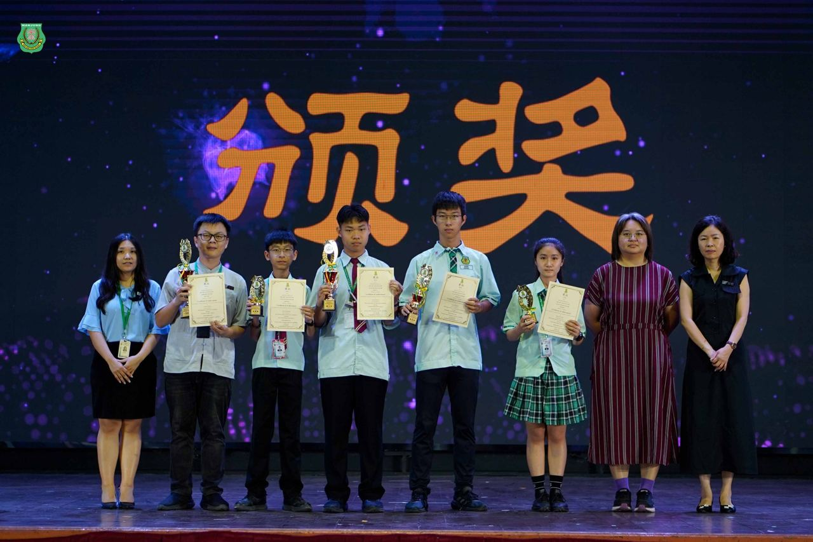
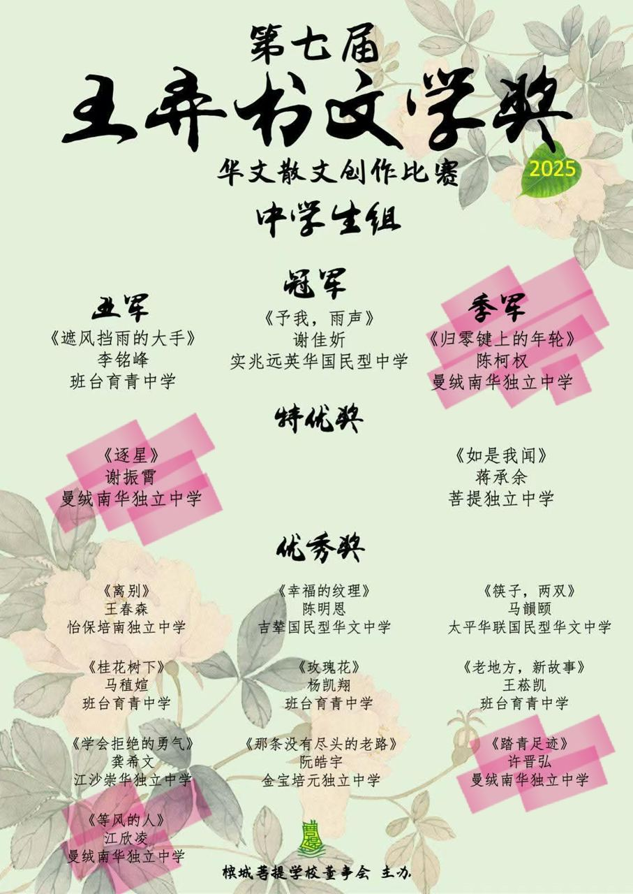
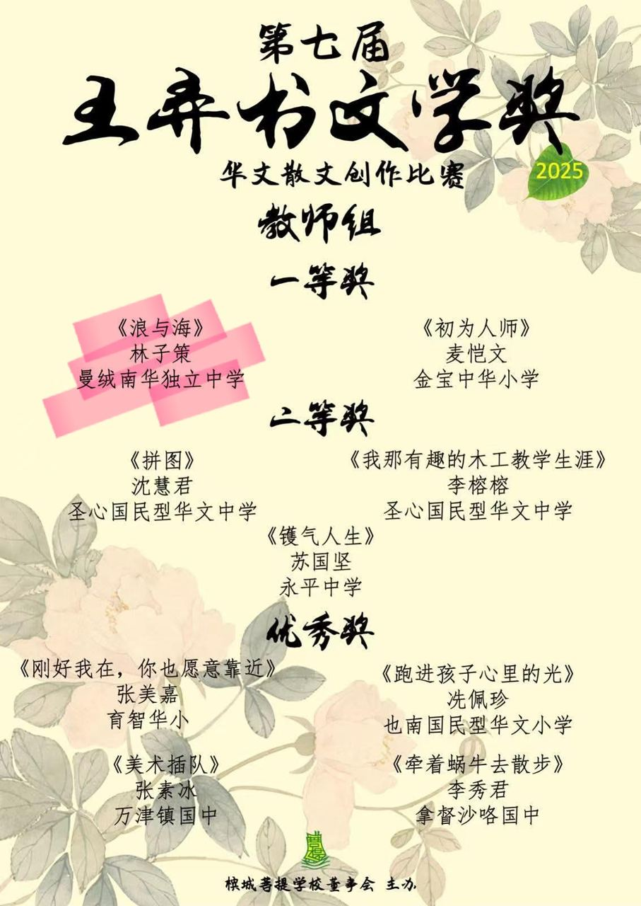

南华独中师生勇夺王弄书文学奖
南华独中师生勇夺王弄书文学奖
校长勉励师生续写文学风华
在第七届“#王弄书文学奖”华文散文创作比赛中，曼绒南华独中再传捷报，共有四名学生及一名教师凭借真挚动人的作品脱颖而出，斩获佳绩，展现南华师生在文学创作上的写作实力与人文底蕴。
在中学生组方面，高一忠 #陈柯权 以《#归零键上的年轮》勇夺季军。作品以母亲的会计计算机为线索，细腻勾勒母亲撑起家庭的坚毅与付出，以及时光流转后母亲逐渐力不从心的无奈，字里行间饱含感恩与深情。陈柯权的作品由陈明芬老师指导。
#谢振霄 凭《#逐星》获得特优奖，文章以“北极星”意象歌颂师长在迷茫中的引领力量，传递勇气与希望；#江欣凌 的《#等风的人》则获优秀奖，通过清明扫墓的场景，探讨亲情、等待与生命有限的深刻课题；另一名同学 #许晋弘 的《#踏青足迹》同样荣膺优秀奖，作品细致描写闽南与客家清明习俗，展现传统祭祖仪式的庄重与温情，并升华至与祖先的心灵对话。此三篇作品则由林子策指导。
不仅学生表现不俗，教师组同样传来捷报。#林子策老师 凭借作品《#浪与海》勇夺一等奖。作品透过“海”与“浪”的意象，呈现师生在写作路上的共鸣与成长：学生们在书写中逐渐学会面对生命的失落、突破依赖与不安，而教师亦从中见证文字的力量与教育的深情。
对于师生的优异表现，校长陈丽冰博士在第一时间表达祝贺。她表示：“文学不仅是文字的堆砌，更是心灵与生命的映照。我为师生们能在赛场上写出真情、写出思想而深感骄傲。感谢林子策老师与陈明芬老师的悉心指导，也欣慰同学们勇敢以文字诉说自我。愿大家继续坚守创作初心，让文学的火焰在南华校园里长燃不息。”


